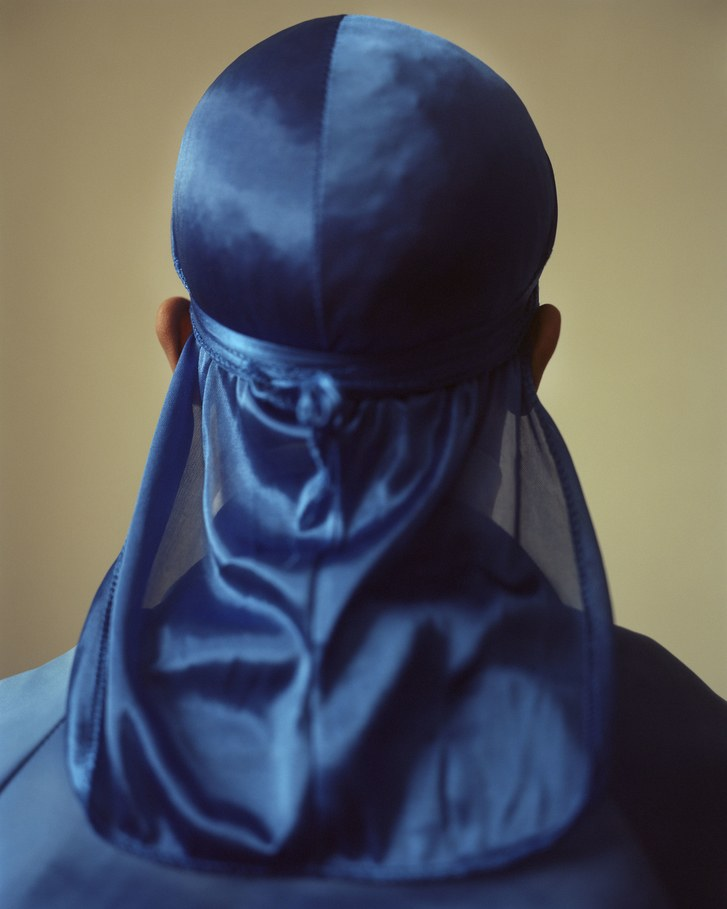
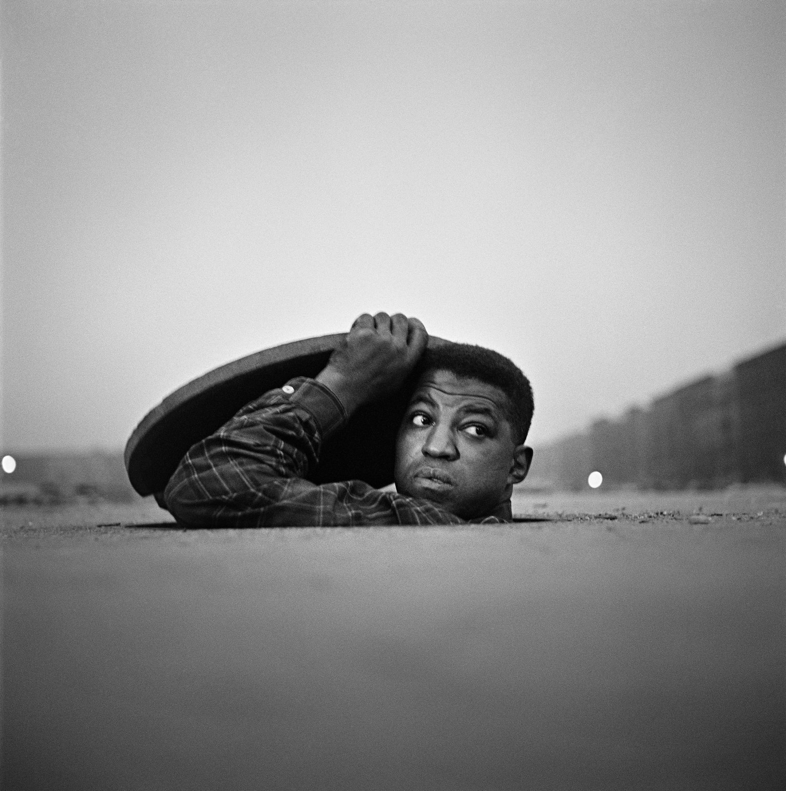
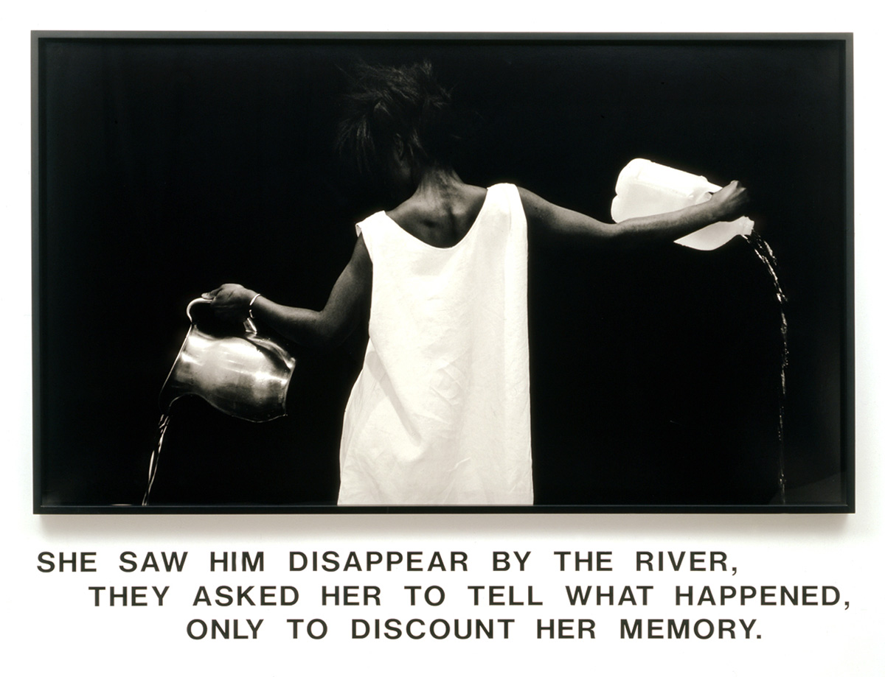
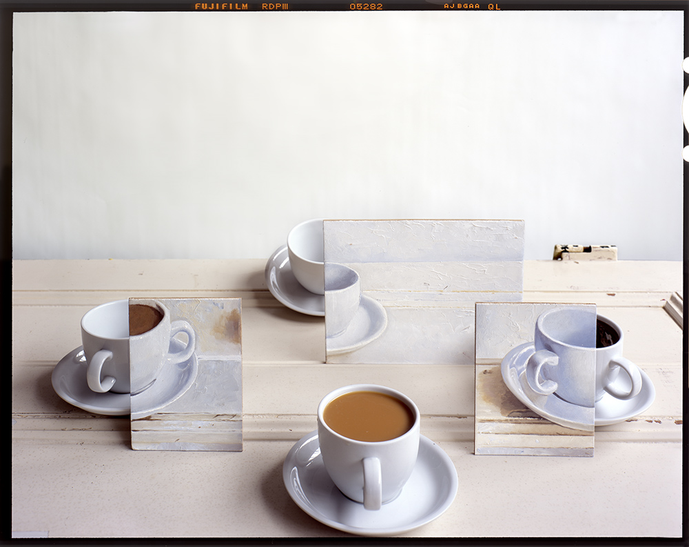
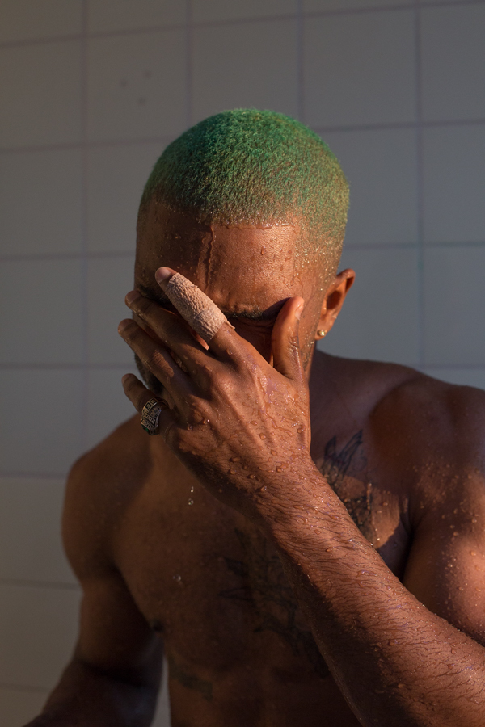

Collin W. Elliott
Photography
At the age of 17, my passion for photogarphy was born. Initially, photography served as a
new outlet of therapy for me, shortly after my father passed away. Little did I know, this
passion would soon switch over to something I wanted to make a career out of. Before starting
school for Graphic Design, where I took several Photography courses, I would learn
new concept on my on through online courses.
There are several photographers that have been influential during my development as a photographer. I'd love to share a few of them with you!
Guy Bourdin

Fashion Photographer.
John C. Edmonds

Fine Arts Photographer
Gordon Parks
Civil Rights Photograher
Lorna Simpson
Fine Arts‑Photographer
John Chervinsky
Visual 
Wolfgang Tilmans
